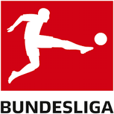
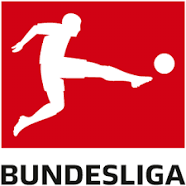
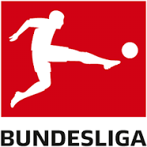

La primera la sigue ocupando la inglesa Premier League con 87,926, y le siguen LaLiga española con 80,570, la italiana Serie A, bastante por debajo con 63,616,
la alemana Bundesliga con 61,427. La francesa suma 43,498. La neerlandesa, la escocesa, la rusa y la austríaca acaban de completar el top-10

La Premier League, también conocida en Inglaterra como The Premiership, es la máxima categoría del sistema de ligas de fútbol de Inglaterra. Comenzó a disputarse en la temporada 1992-93.
La Primera División de España o LaLiga —conocida como LaLiga Santander por motivos de patrocinio, y cuyo nombre oficial es Campeonato Nacional de Liga de Primera División es la máxima categoría del sistema de ligas de fútbol de España y la principal competición a nivel de clubes del país.
La Serie A de Italia —conocida por motivos de patrocinio como Serie A TIM— es la máxima categoría del sistema de ligas italiano, organizada por la Lega Nazionale Professionisti desde 1946, tras suceder a la Federación Italiana de Fútbol y convertirse en 2010 en la Lega Nazionale Professionisti Serie A.
La Bundesliga es la competición entre los equipos de fútbol de la máxima categoría de Alemania. Se empezó a disputar en 1963, a partir de la unificación de los antiguos campeonatos locales llamados Oberligen.
La Ligue 1 conocida como Ligue 1 Uber Eats por motivos de patrocinio, y oficialmente como Campeonato de fútbol francés — es la primera división del sistema de ligas del fútbol francés organizada por la Ligue de Football Professionnel.